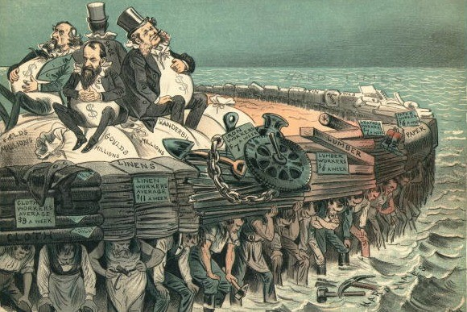

Explaining ‘Imperialism’
Discerning a definition of imperialism is straightforward in the present age. All can objectively agree that imperialism was a process by which one state imposed political, economic, military and social control over a less developed states land, resources, and population. But this is said in a context where the immorality and reprehensibility of imperialism are manifest in the perception of today’s postcolonial society. Therefore, it is crucial to recognise that imperialism was a practice that was both deemed normal and the custom of global politics, whereby the arising of the new ‘Age of Empire’ in the 19th century saw the building of empires through subjugation of land and its resources become conventional for European powers. For this reason, focus must be placed on the explanations and reasoning’s behind imperialism, as this will give for a far more comprehensive understanding of its justification and preservation, rather than focusing on its visual effects of bloodshed and tyranny. Of these theories behind imperialism is the economic rationale, started by Hobson in 1902, believing that imperialism was driven by the economic need of the elites who required more markets, which was expanded upon by Lenin, calling it the ‘highest form of capitalism’. There is also the political claim of Eric Hobsbawm, who believed the ‘Age of Empire’ was a means to stabilise the political power of the elite in an attempt to placate the growing discourse of democracy within 19th century Europe. Other factors such as the growing nationalism of the 19th century , and the ‘civilising mission’ which Imperial powers sought to impose upon colonial subjects, also played significant roles in explaining the justification of imperialism. Historians have debated at length as to which theory best explained imperialism, but all these factors help to clarify its understanding.
Before examining the explanations behind imperialism, the background in which imperialism began must be established. Empires had existed prior to the 18th century, with the period of between 1402 and 1805 widely regarded as first wave of colonisation. But ‘new imperialism’, which began during the 1880s, was distinguished from colonialism; Edward Said differentiates the two, stating imperialism ‘involved the practice, the theory and the attitudes of a dominating metropolitan centre ruling a distant territory’, while colonialism was the ‘implanting of settlements on a distant territory’. Essentially, colonialism refers to the physical process of a country taking control, whilst imperialism refers to political and economic control. Where and why did the process of political and economic dominance arise? There are several factors that this has been accredited to, and of the most prominent is the Second Revolution, beginning in 1850 and ending in 1914. This saw the rapid increase of new markets and raw materials, greatly attracting merchants and capitalist interests. Facilitated by the rise of nationalism and technological advances, competition grew amongst the powers within Europe, such as the Franco-British rivalry. The Long Depression of 1873-1896, which led to price deflation and business downturn, placed the burden on governments to further their home industry, heightening the competition and instability within Europe. Thus, in the search for new markets, European powers turned to subjugating lands within Africa and Asia, exploiting the natural resources and cheap labour as a means to further, what they believed, to be in their national interests. The new age of imperialism saw European powers control 84% of the globe’s land by 1914, having previously controlled just 7% in the 1500s, and 35% in the 1800s. The British Empire acclaimed 4.5 million square miles, which including 66 million people, amassing a third of the world’s territory in its peak. The French Empire amassed 3.5 million square miles, whilst Germany, Belgium and Italy acquired around 1 million each. From these figures, there is a distinguishable intensification in the Imperial power’s imposition of power, unparalleled to that of any other time. The intensification of imperial interest during the 19th century was revealing of several aspects of imperialism; firstly, economy is an indispensable component of imperialism, and secondly, competition and nationalistic desires fuelled this economic need.
However, it is crucial to note that did not mean imperialism was an inevitability. The term ‘imperialism’ was introduced in the 1870s by opponents of the aggressive imperial policies of British Prime Minister Benjamin Disraeli and was later appropriated to ‘imperialism’ by its supporters. The uncertainty of imperialism can be seen through the motives of the imperial powers; France’s imperial aspirations were driven by revenge against Germany, following their defeat to the Prussians during the Franco-Prussian War in 1870-71, with the loss of Lorraine being a humiliation for the French, and thus French imperial interest were closely connected to the nationalist drive of reprisal. Furthermore, Chancellor Otto von Bismarck had clearly outlined himself as being against imperialism, believing this to side-track from European diplomacy. But he was forced to adhere to imperialist interest, due to the growth of colonial lobbying – such as the Colonization League – filled with incessant businessman, financiers and merchants, who used it to vent their financial interests, layering it with nationalistic enthusiasm. The incessant lobbying, which also took place in France and Britain through prominent lobbyists such as Jules Ferry being a primary motivator, show that imperialism had to be fought for and was not the only answer, and therefore was avoidable.
Recognising that imperialism was not an inevitability allows for a clearer understanding of the theories behind imperialism. Hobson’s theory in ‘Imperialism: A Study’ (1902) significantly influenced contemporary perception of imperialism. He believed that the “taproot of imperialism” is capitalism but is coated by patriotism and missionary work. He believed that the limited opportunities at home prompted financial interests to acquire more profitable investments in less-developed lands with lower labour costs, less competition and unexploited raw material. Lenin furthered this argument, claiming imperialism to be the natural stage of the capitalist need to constantly expand their markets with the closure of resources at home, it was inevitable the European powers would plunder outside their national boundaries. He argued that this persistent expansionist drive and “international trusts” would divide up the world, through colonialism and war. However, other historians disregard the economic aspect being the primary driving force of imperialism, such as David Fieldhouse (1970). He argued that that it was not the bankers and industrialists that led imperialism, but Christian missionaries and explorers, such as Henry Morton Stanley, and Empire minded politicians. Missionaries such as David Livingston, sought not only to spread the word of God, but believed imperialism could be used to aid humanitarian causes such as ending internal slavery within Africa. Other critics of the Hobson-Lenin thesis believed geostrategic reasoning were key motivators of imperialism, such as Ronald Robinson and John Gallagher (1953). Geostrategic positions such as the Suez Canal were of great significance to Britain asserting their control of their Empire. Furthermore, imperialism did not guarantee profit; Western maps showed several blank regions for much of the African continent, that included 700 different societies and in most cases, military and political costs of occupation exceeded the financial return. There is also the political reasoning of imperialism, as explored by Eric Hobsbawm, who believed imperialism was a means to stabilise and consolidate the political power of the elite and placate the growing discourse of democracy amongst an rising populations within European countries during the 19th century, whereby the great depression and difficulty in maintaining living standards could lay the foundations for a potential revolution, thus there was a need to create a method to subdue the increasing demands of reform and democracy; this came in the form of imperialism.
A key dynamic to decipher in understanding the explanations behind imperialism is the social implications it had. This is perhaps best captured by Rudyard Kipling’s poem, a White Man’s Burden, prompting the United States – and by extension the imperial European powers – to “Take up a White Man’s burden… By open speech and simple… To seek another’s profit / And work another’s gain… The blame of those ye better, / The hate of those ye guard”. Kipling believed the responsibility of reforming and civilising less developed nations was upon the imperial powers, due to the lesser nations inability to do so themselves. The lines ‘The blame of those yet better’ and the ‘hate of those ye guard’, is significant, as it reveals that the ‘civilisation’ of inferior nations was a hindrance for imperial powers, rather than a responsibility done out of virtue, and thus the imperial powers must disregard those indigenous people that opposed – by ignoring their deaths – of which both those that implemented imperialism on ground and those within the Mother County did. But this prejudiced belief must be understood within the context of which Social Darwinism was prevalent thought throughout Western Europe. The outburst of racial science in the mid-19th century witnessed a move away from the orthodox view that human races originated from one family, towards the concept of heterogeneity within mankind whereby there were fixed natural differences between races fixed in human biology. Naturally, in which the ‘white man’ was of at the top of a patriarchal society, this paved the way for institutionalising of the ‘Saxon race’, as argued by the most prominent racial scientist, Robert Knox, as well as the inferiority of those of African and Asian descent. Furthermore, his belief that race is all pervasive within society is significant “race is everything. Literature, science, art, in a word, civilisation depend on it.” It shows that this thought of racial superiority was imbedded in all strands of society. Therefore, the outburst of philanthropic study during the 1840s is crucial in understanding imperialism and its consequences. This manifested into the ‘civilising mission’, which was upheld as an official French policy, whereby European powers believed it within their obligations to humanise, reform and educate the indigenous people, by opening the door of the technological advancements of the enlightened West. In exchange, the indigenous people would provide labour and resources that were of benefit to the imperial powers. The inherent belief of superiority is a key driving factor in the preservation of imperialism, as well as its main form of justification. British colonial official Lord Frederick Lugard coined the term ‘Dual Mandate’, as a means to label this responsibility of the British. This civilising mission was sharpened by the missionary work, fervently promoted by imperialist figures such as Lord Curzon and David Livingston. They outlined the goals of imperialism to be “Christianity, Commerce and Civilisation”, believing the success and development of a society to be only attained through Christianity, revealing of the inherent prejudice towards not only the indigenous people’s racial composition, but their religious practices.
One cannot understand imperialism without recognising the deep trail of tyranny that was left behind. It must be noted that almost all territories resisted imperialism. This resulted countless slaughtering’s of natives, across all colonies; with the technological superiority of the Imperial powers, through weapons such as the maxim machine gun. Of the most notable are the eight million natives that died under Leopold’s reign over Congo, in his quest for ivory and rubber, or the tens of millions that died as a result of British rule within India. More specific cases of the Voulet-Chanoine Mission by the French military in Senega (1898), or Germany’s genocide of Namibia (1904-07) give for a more detailed look at the more specific atrocities caused directly as a result of Imperialism.
The definition and explanation of imperialism lies somewhere between Fieldhouse’s claim that European expansion came from explorers, missionaries and empire-minded politicians, and the economic argument of Hobson, whereby faceless financiers manipulated national interests to further capitalist greed. This was driven by the idealistic belief in the ‘civilising mission’, upheld by Imperial powers, which came about as a result of the combination of nationalist fervour and economic interests of imperial powers that swept 19th century Europe.